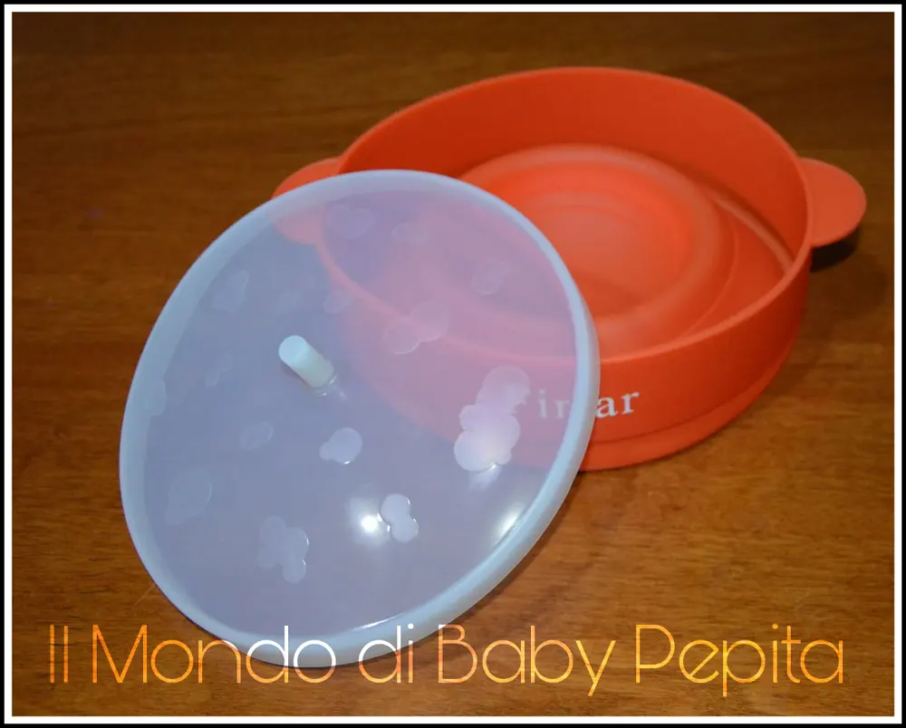
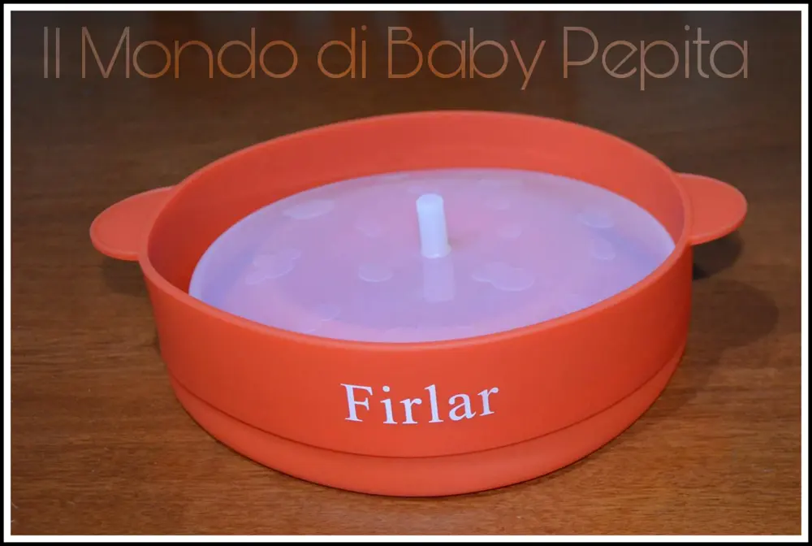
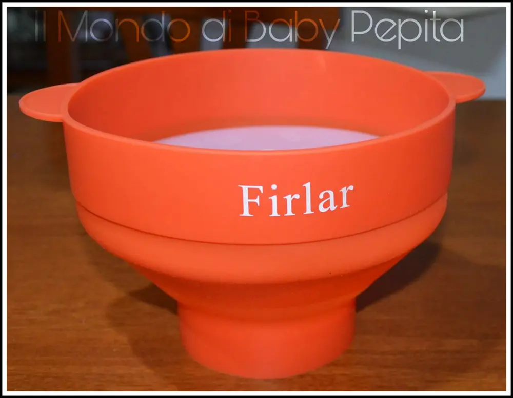
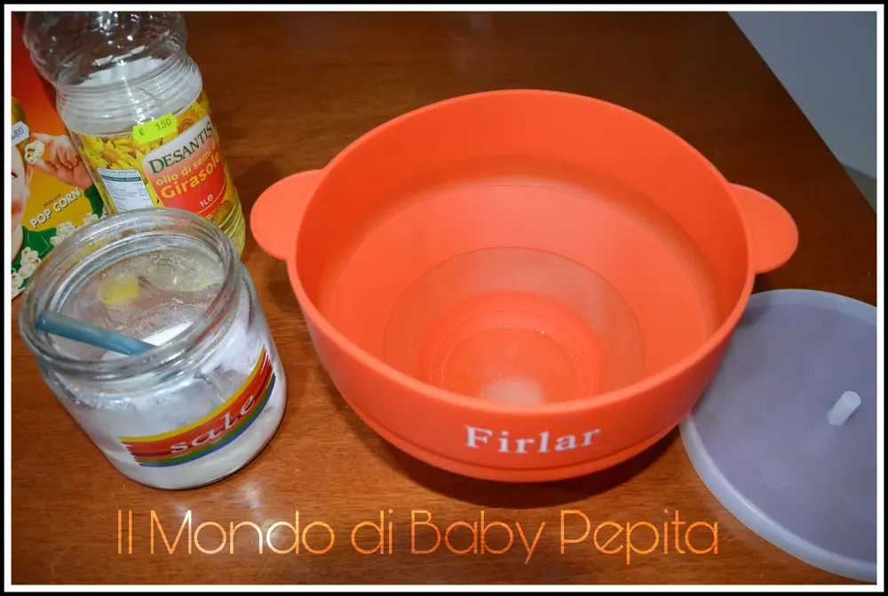
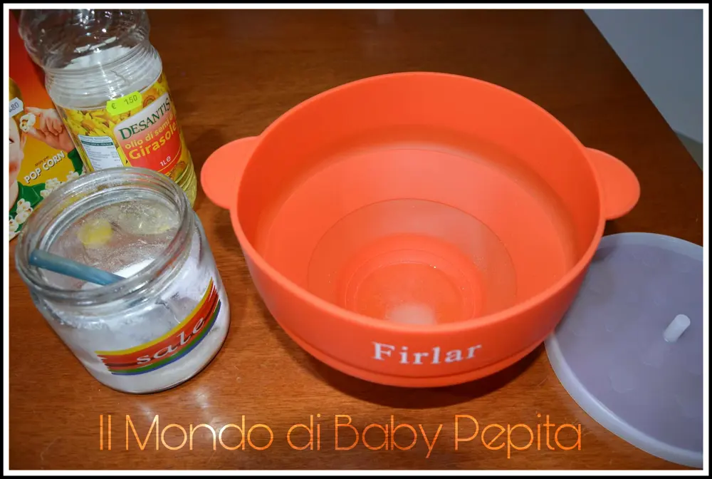
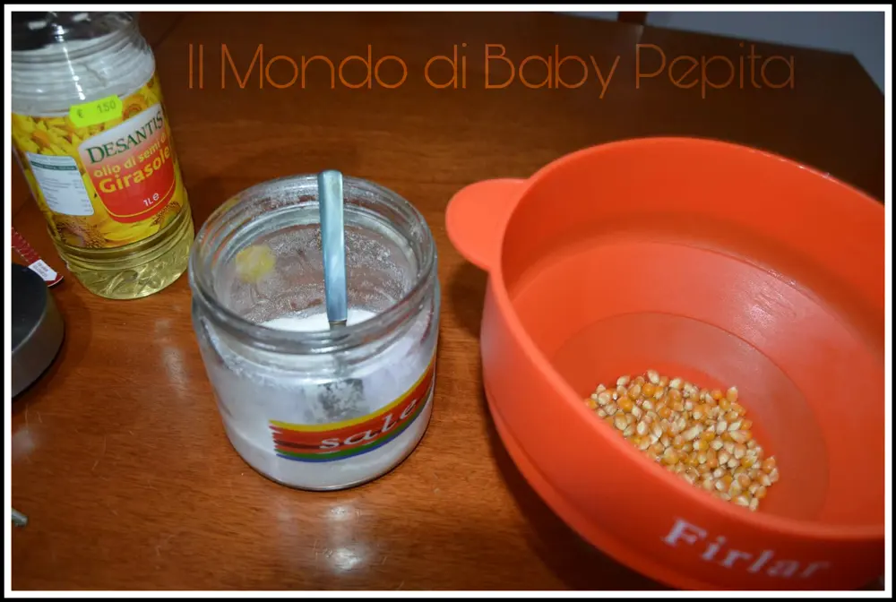
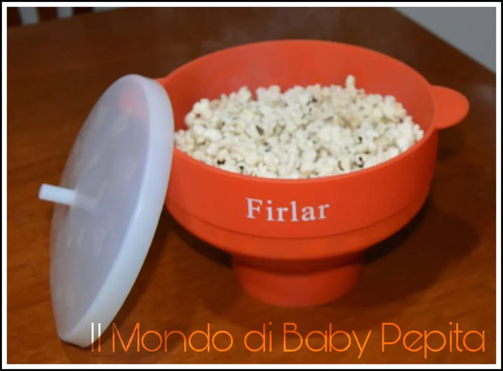
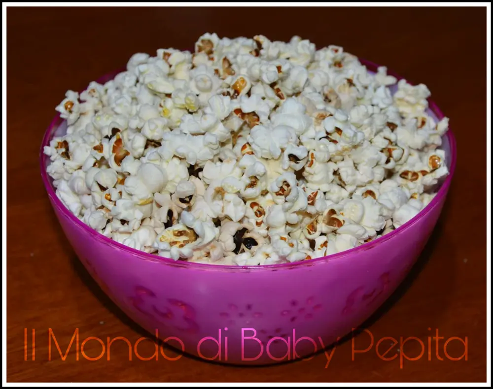

Popcorn Popper robusti manici in silicone - collaborazione Firlar

Il prodotto che mi è arrivato puntuale e ben imballato questa volta è una cosa carina e molto sfiziosa.
E' la prima volta che vedo un prodotto del genere, molto pratico e comodo da utilizzare, permette di ottenere un risultato perfetto in pochissimi minuti.

Sto parlando di un contenitore in silicone ed è dotato di coperchio per poter produrre i popcorn.
Il coperchio è livellato a seconda del numero di porzioni che si vogliono preparare e si può scegliere se aggiungere olio e sale o lasciarli al naturale: in tutti i casi i popcorn si creano in pochi minuti al microonde.
È un ottimo prodotto, bastano 3 minuti nel microonde a 700W e i vostri pop corn saranno pronti.

Il contenitore è in silicone morbido ed è pieghevole occupando poco spazio quando non lo si utilizza.
Basta un attimo per metterlo in piedi e preparare subito i popcorn.


L’uso è semplice e facile, basterà:
A scelta se aggiungere un filo d'olio e un pò di burro;

Un pizzico di sale (potete anche metterli direttamente dentro senza nessun condimento e aggiungere un pizzico di sale alla fine);

Versare i popcorn nella ciotola in silicone.

Dopo qualche minuto usando il microonde a circa 700W i popcorn sono pronti.

Buoni e senza sporcare fornelli e pentoline.

Sono rimasta molto soddisfatta,ottimo rapporto qualità/prezzo.

Prezzo: 11,00 €
Potete acquistare il prodotto CLICCANDO QUESTA SCRITTA BLU
Per quanto riguarda me seguitemi:FACEBOOKINSTAGRAMTWITTERYOUTUBE